浅井戸ポンプ - PG-88AU(？)
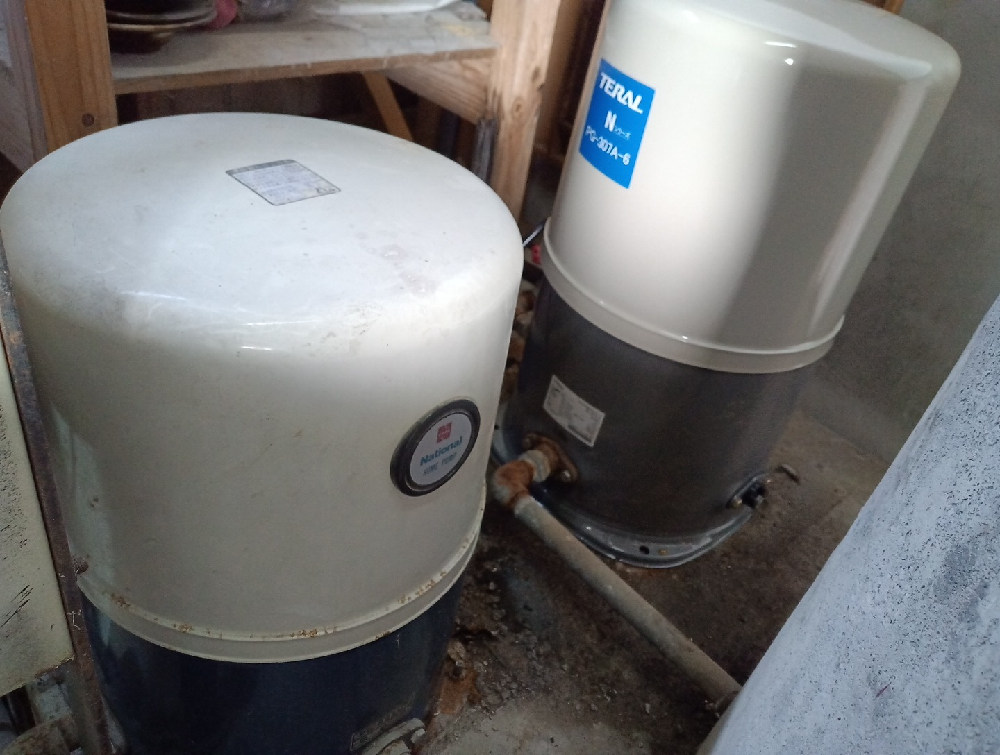
2025年頃まで水を送り続けたとのこと。
後方にはテラル株式会社製浅井戸ポンプ「Nシリーズ」のPG-307A-6が見える。
浅井戸ポンプを始めとした事業は2008年頃にテラル株式会社へ事業継承されている。
画像引用：X(旧Twitter)

2025年頃まで水を送り続けたとのこと。
後方にはテラル株式会社製浅井戸ポンプ「Nシリーズ」のPG-307A-6が見える。
浅井戸ポンプを始めとした事業は2008年頃にテラル株式会社へ事業継承されている。
画像引用：X(旧Twitter)
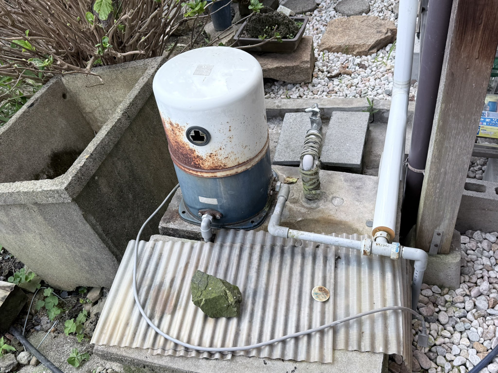
2025年頃まで水を送り続けたとのこと。
画像引用：X(旧Twitter)
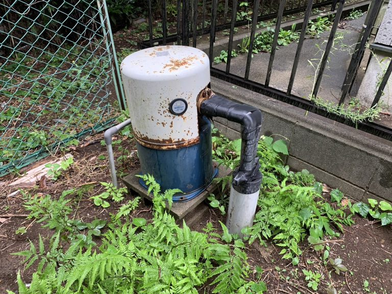
ブログ著者のDIYにより復帰し、これからも水を送り続けられるようになったとのこと。
画像引用：DIYゴリラおやじブログ
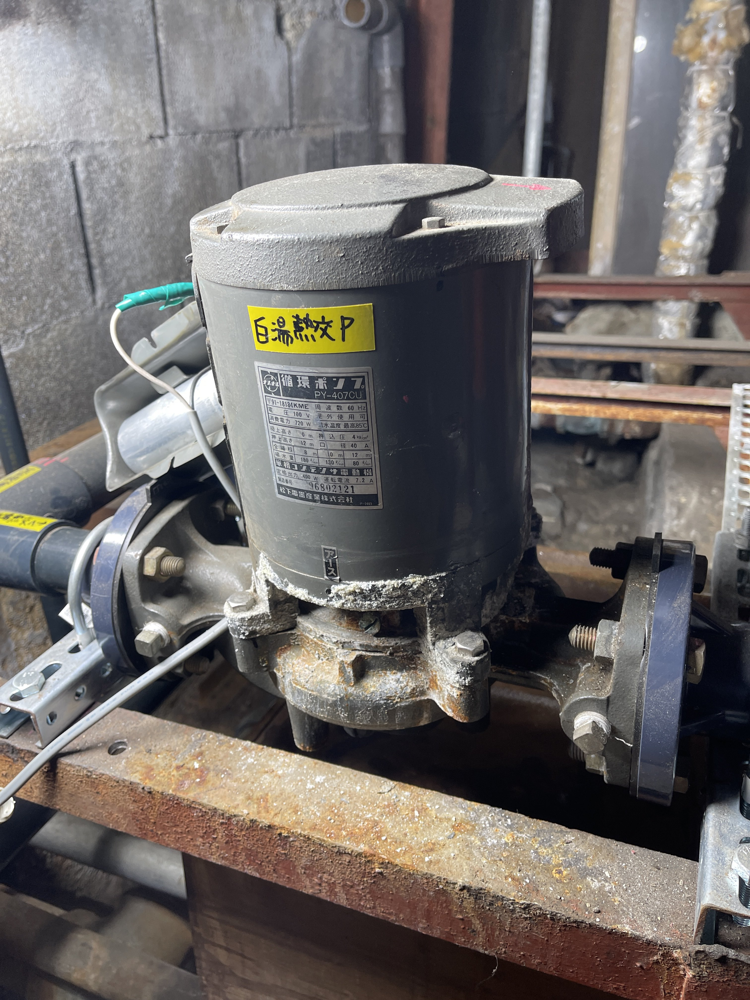
長野県松本市の富士の湯にて。
2025年頃まで温泉水を送り続けたとのこと。
一般家庭に普及していた井戸ポンプと異なり、設備用途の循環ポンプの現存写真はごく稀である。
画像引用：X(旧Twitter)
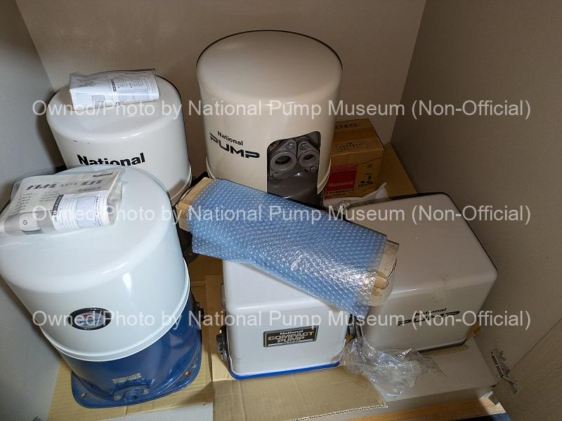
サイト管理者の保有する製品。
左上から順にPG-85A、PG-305F、PG-138AUB、PG-201AS、PG-203AS。
右上の箱はPY-203C7.03が入っている。
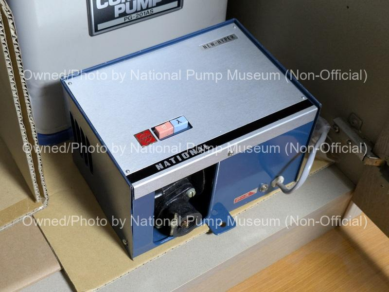
サイト管理者の保有する製品。
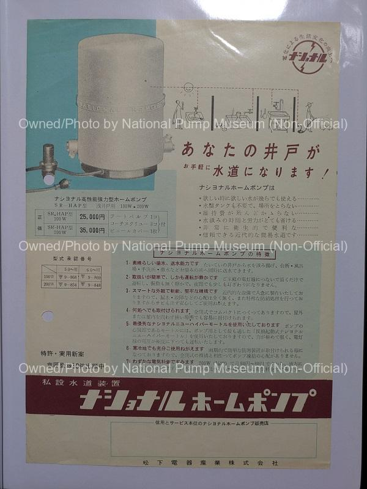
サイト管理者の保有する資料。
製品デザインから、ごく初期のチラシと見られる。
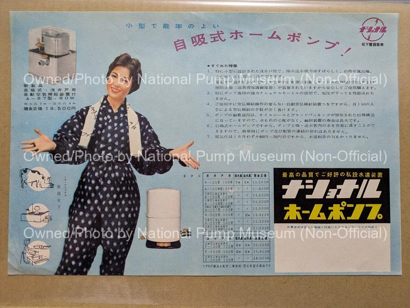
サイト管理者の保有する資料。
製品デザインから、ごく初期のチラシと見られる。
品番体系がSR-HAP型からA-105型やF-205型に改められている。
写真内の人物はミス・ナショナルを務めた女優の若尾文子。
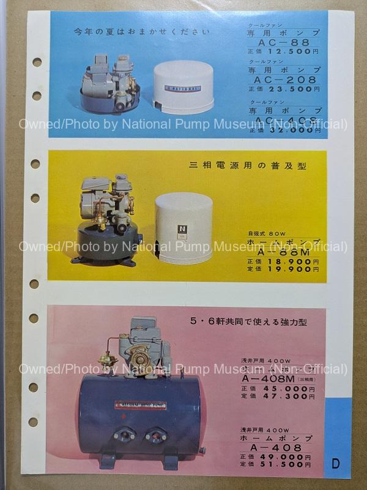
サイト管理者の保有する資料。
製品デザインはPG-138AUなどと近しいものに改められている。
また、強力型やクールファン専用ポンプなども掲載されている。
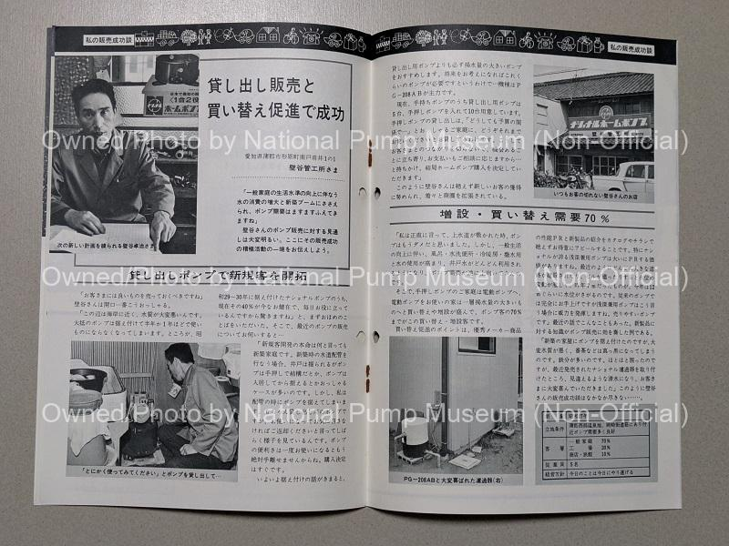
サイト管理者の保有する資料。
壁谷管工所様は営業方法を工夫し、新規顧客開拓に取り組んだとのこと。
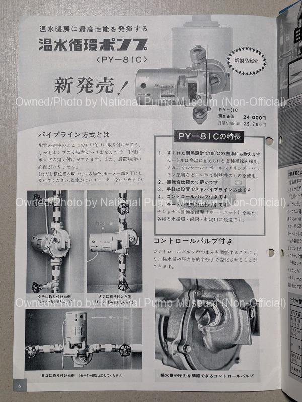
サイト管理者の保有する資料。
パイプライン方式の温水循環ポンプで、耐熱設計、静音性、性能を調整するバルブが特徴。
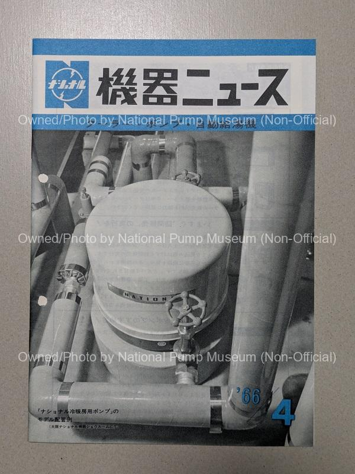
サイト管理者の保有する資料。
ナショナル機器ニュースで冷暖房用ポンプが単体で掲載された回の表紙。
機種は不明だが前述のAC-88か、その後継機種と見られる。
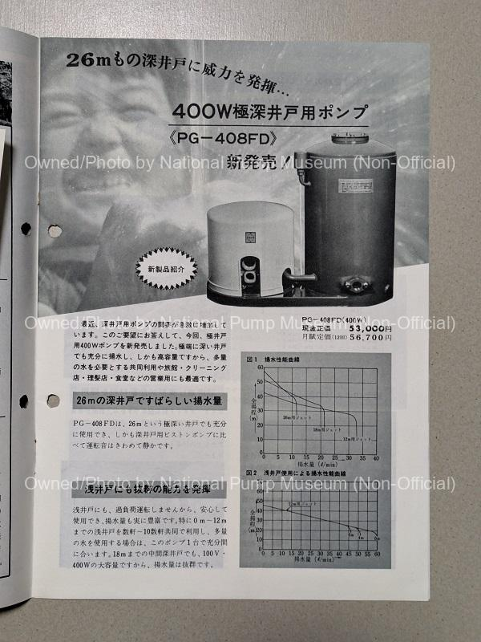
サイト管理者の保有する資料。
ジェットによる高い吸い込み揚程を持つ、極深井戸ポンプのPG-408FD。